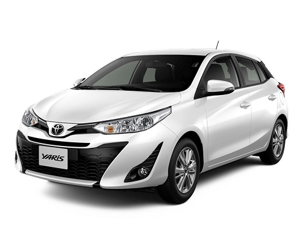

La Toyota Hilux es una de las 'pick-up' con más éxito del mundo. Su historia se remonta casi medio siglo atrás, y aún hoy sigue liderando mercados tan competidos como el estadounidense.

La nueva gama presenta un aspecto más refinado y contemporáneo, gracias a los cambios del patrón de la malla de la parrilla frontal, los faros antiniebla biselados y las nuevas llantas de aleación.

El Toyota Etios 2018/2019 se encuadra dentro del segmento B ( autos chicos). Tras ponerse a la venta en el país a mediados de 2013, en abril de 2017 se presentó la actual versión.

Etios llegó a nuestro mercado en 2013, como una propuesta que quizás no llamaba la atención por su estética aunque sí por su racionalidad y sobre todo por representar el desembarco de la marca japonesa en el segmento.
Es un coche claramente enfocado a ser práctico, así que su tecnología es completa pero sencilla.
Todo el GR Yaris está planteado casi como un coche de carreras que no defrauda lo más mínimo.